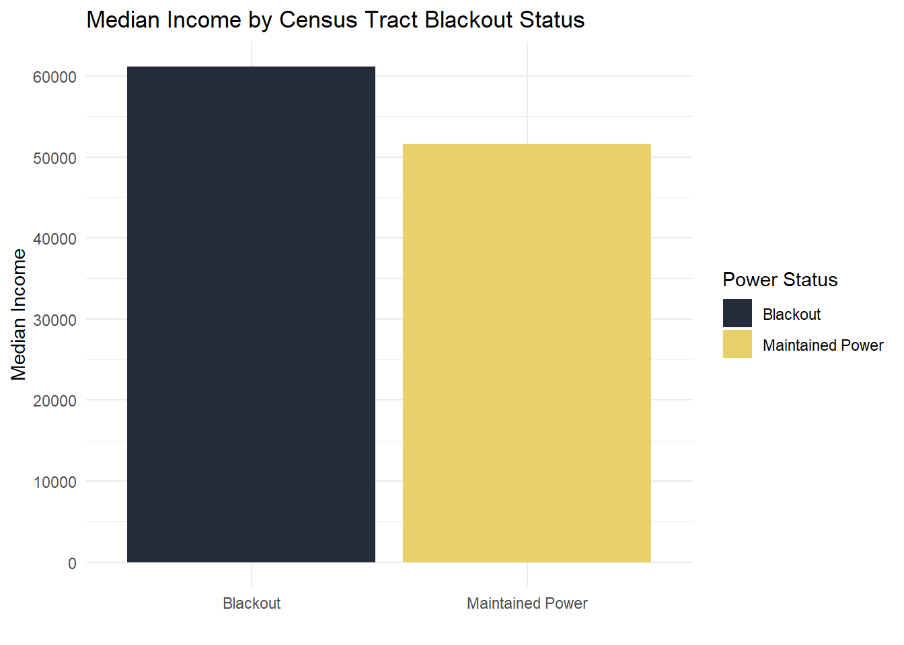

library(sf)
library(tmap)
library(here)
library(terra)
library(stars)
library(dplyr)
library(tidyverse)Homework Assignment #3 Sample
Exploring Light Intensity Change from Winter Storms in Houston, TX
Loading Libraries
Loading Data
buildings <- st_read(
here::here("data", "data", "gis_osm_buildings_a_free_1.gpkg"),
query = "SELECT * FROM gis_osm_buildings_a_free_1
WHERE (type IS NULL AND name IS NULL)
OR type IN ('residential', 'apartments', 'house', 'static_caravan', 'detached')"
)
roads <- st_read(here::here("data", "data", "gis_osm_roads_free_1.gpkg"), query = "SELECT * FROM gis_osm_roads_free_1 WHERE fclass='motorway'")
feb_7_a <- read_stars(here::here("data", "data", "VNP46A1", "VNP46A1.A2021038.h08v05.001.2021039064328.tif"))
feb_7_b <- read_stars(here::here("data", "data", "VNP46A1", "VNP46A1.A2021038.h08v06.001.2021039064329.tif"))
feb_16_a <- read_stars(here::here("data", "data", "VNP46A1", "VNP46A1.A2021047.h08v05.001.2021048091106.tif"))
feb_16_b <- read_stars(here::here("data", "data", "VNP46A1", "VNP46A1.A2021047.h08v06.001.2021048091105.tif"))
income_ct <- st_read(here::here("data", "data", "ACS_2019_5YR_TRACT_48_TEXAS.gdb"), layer = "X19_INCOME")
geometry_ct <- st_read(here::here("data", "data", "ACS_2019_5YR_TRACT_48_TEXAS.gdb"), layer = "ACS_2019_5YR_TRACT_48_TEXAS")Reprojecting Roads and Buildings to preferred CRS (“EPSG:3083”)
roads <- st_transform(roads, crs = 3083)
buildings <- st_transform(buildings, crs = 3083)Reprojecting and Cropping rasters to the Houston area for February 7 and February 16. I used a for loop here for practice
nightlights7 <- st_mosaic(feb_7_a, feb_7_b)
nightlights16 <- st_mosaic(feb_16_a, feb_16_b)
rasters <- list(nightlights7, nightlights16)
names(rasters) <- c("nightlights7", "nightlights16")
for (i in seq_along(rasters)) {
if (st_crs(rasters[[i]]) != st_crs(3083)) {
message(paste("Reprojected", names(rasters)[i], "to EPSG:3083"))
rasters[[i]] <- st_transform(rasters[[i]], "EPSG:3083")
} else {
message(paste("CRS of", names(rasters)[i], "is already EPSG:3083"))
}
}
bbox_rast <- st_bbox(c(xmin = -96.5, xmax = -94.5, ymin = 29, ymax = 30.5), crs = st_crs(nightlights7))
nightlights7 <- st_crop(nightlights7, bbox_rast)
nightlights16 <- st_crop(nightlights16, bbox_rast)Adding median income, joining it to the census tract geometry data, and cropping it to the Houston area
median_income <- income_ct %>%
select(GEOID, B19013e1)
income_ct <- left_join(geometry_ct, median_income, join_by(GEOID_Data == GEOID))
bbox <- c(xmin = -96.5, xmax = -94.5, ymin = 29, ymax = 30.5)
income_ct_crop <- st_crop(income_ct, bbox)Creating a blackout mask, and vectorizing it
difference_raster <- (nightlights7 - nightlights16)
difference_raster[difference_raster <= 200] <- NA
difference_sf <- as.polygons(rast(difference_raster)) %>%
st_as_sf() %>%
st_transform(crs = "EPSG:3083")Creating a buffer around Houston area highways, and removing that area from the blackout mask
highway_buffer <- st_buffer(roads, dist = 200) %>%
st_union() %>%
st_transform(crs = 3083) %>%
st_make_valid() %>%
st_as_sf()
diff_no_hwy <- st_difference(difference_sf, highway_buffer) %>%
st_transform(crs = "EPSG:3083")Creating two maps displaying the difference in light intensity before and after the storm
feb_16_lights <-
tm_shape(income_ct_crop) +
tm_polygons(alpha = 0,
border.col = "#242C3C") +
tm_shape(nightlights16,
raster.warp = FALSE) +
tm_raster(palette = c("#00020E", "#E9D06B"),
style = "fixed",
breaks = c(-Inf, -200, 200, 300, 500, 700, 1300, 2000, 4000, 7000, Inf),
alpha = 0.8) +
tm_layout(bg.color = "#00020E",
legend.show = FALSE,
main.title = "Light Intensity of Houston\nAfter Winter Storm, 2021",
main.title.position = c("center", "top"),
inner.margins = c(0, 0, 0, 0),
title = "February 16",
title.size = 0.8,
title.color = "seashell2",
title.fontfamily = "times",
title.fontface = "bold",
title.position = c(0.77, 0.08)) +
tm_scale_bar(color.dark = "seashell4",
color.light = "seashell2",
text.color = "seashell2",
position = c(0.05, 0.02)) +
tm_compass(type = "arrow",
size = 1,
position = c(0.05, 0.1),
color.dark = "seashell4",
color.light = "seashell2",
text.color = "seashell2")
feb_7_lights <-
tm_shape(income_ct_crop) +
tm_polygons(alpha = 0,
border.col = "#242C3C") +
tm_shape(nightlights7,
raster.warp = FALSE) +
tm_raster(palette = c("#00020E", "#E9D06B"),
style = "fixed",
breaks = c(-Inf, -200, 200, 300, 500, 700, 1300, 2000, 4000, 7000, Inf),
alpha = 0.8) +
tm_layout(bg.color = "#00020E",
legend.show = FALSE,
main.title = "Light Intensity of Houston\nBefore Winter Storm, 2021",
main.title.position = c("center", "top"),
inner.margins = c(0, 0, 0, 0),
title = "February 7",
title.size = 0.8,
title.color = "seashell2",
title.fontfamily = "times",
title.fontface = "bold",
title.position = c(0.77, 0.08)) +
tm_scale_bar(color.dark = "seashell4",
color.light = "seashell2",
text.color = "seashell2",
position = c(0.05, 0.02)) +
tm_compass(type = "arrow",
size = 1,
position = c(0.05, 0.1),
color.dark = "seashell4",
color.light = "seashell2",
text.color = "seashell2")
tmap_arrange(feb_7_lights, feb_16_lights, ncol = 2, asp = 1)
Identifying homes that were affected by the blackout, by isolating structures that intersect with the blackout mask
blackout_buildings <- st_intersects(diff_no_hwy, buildings)
blackout_buildings_index <- blackout_buildings %>%
unlist() %>%
unique()
affected_buildings <- buildings[blackout_buildings_index, ]Estimating the number of homes affected by the blackout
num_buildings <- nrow(buildings)
num_buildings_blackout <- nrow(affected_buildings)
affected_buildings_pctg <- num_buildings_blackout / num_buildings
buildings_summary_table <- data.frame(
Total_Buildings = num_buildings,
Affected_Buildings = num_buildings_blackout,
Affected_Buildings_Percentage = affected_buildings_pctg,
Num_Affected_Homes = num_buildings_blackout
)
kableExtra::kable(buildings_summary_table,
format = "simple",
col.names = c("Total Homes",
"Affected Homes",
"Percentage of Homes Affected",
"Number of Homes Affected"),
caption = "February 2021 Winter Storm Blackout Impact Table",
align = "l",
digits = 2)| Total Homes | Affected Homes | Percentage of Homes Affected | Number of Homes Affected |
|---|---|---|---|
| 475941 | 157410 | 0.33 | 157410 |
Above is a table of homes that were affected by the blackouts, showing that one third of all homes in Houston lost power as a result of these storms.
Identifying census tracts that were affected by the blackout
income_ct <- st_transform(income_ct, crs = "EPSG:3083")
census_blackout <- st_intersects(diff_no_hwy, income_ct)
census_index <- census_blackout %>%
unlist() %>%
unique()
census_index <- income_ct[census_index, ]Creating a summary of median incomes by affected census tract, to identify possible environmental justice issues
income_ct_crop_df <- as.data.frame(income_ct_crop)
census_index_df <- as.data.frame(census_index)
median_income_df <- income_ct_crop_df %>%
left_join(census_index_df %>% select(GEOID) %>% mutate(in_blackout = "Blackout"),
by = "GEOID") %>%
mutate(in_blackout = if_else(is.na(in_blackout), "Maintained Power", in_blackout))
median_income_summary <- median_income_df %>%
group_by(in_blackout) %>%
summarise(median_income = median(B19013e1, na.rm = TRUE))Creating a bar plot of affected and unaffected census tracts, and their median incomes
ggplot(median_income_summary, aes(x = factor(in_blackout), y = median_income, fill = factor(in_blackout))) +
geom_col() +
labs(title = "Median Income by Census Tract Blackout Status",
x = "",
y = "Median Income",
fill = "Power Status") +
scale_fill_manual(values = c("Blackout" = "#242C3C", "Maintained Power" = "#E9D06B")) +
scale_y_continuous(breaks = seq(0, max(median_income_summary$median_income), by = 10000)) +
theme_minimal()
Creating a map of homes that lost power from the blackouts
tm_shape(income_ct_crop) +
tm_polygons(border.col = "#C5CBCF",
col = "seashell2") +
tm_shape(affected_buildings) +
tm_polygons(border.col = "gray5",
col = "gray5",
lwd = 0.2) +
tm_layout(bg.color = "seashell3",
inner.margins = c(0, 0, 0, 0),
main.title = "Affected Homes",
main.title.position = c("center", "top")) +
tm_scale_bar(color.dark = "seashell4",
color.light = "seashell2",
text.color = "seashell4",
position = c(0.05, 0.02)) +
tm_compass(type = "arrow",
size = 1,
position = c(0.05, 0.1),
color.dark = "seashell4",
color.light = "seashell2",
text.color = "seashell4")
Creating a map of census tracts that were affected by the blackout
tm_shape(income_ct_crop) +
tm_polygons(col = "#F0EBD8",
border.col = "#665A47",
border.alpha = 0.4) +
tm_shape(census_index) +
tm_polygons(col = "B19013e1",,
palette = "YlOrRd",
border.col = "#665A47",
border.alpha = 0.8,
title = "Median Income") +
tm_layout(bg.color = "#F0EBD8",
inner.margins = c(0, 0, 0, 0),
legend.outside = TRUE,
legend.outside.position = "right",
main.title = "Affected Census Tracts By Median Income",
main.title.position = c("left", "top")) +
tm_scale_bar(text.color = "#665A47",
color.dark = "#665A47",
color.light = "#F6EAC7",
position = c(0.76, 0.02),
width = 0.2) +
tm_compass(type = "arrow",
size = 1,
position = c(0.9, 0.08),
text.color = "#665A47",
color.dark = "#665A47",
color.light = "#F6EAC7") 
The winter storms in Houston in February 2021 affected a significant area of the city, causing approximately 33% of homes to lose power; over 157,000 homes according to the given data. This study may be limited however, as data was only taken of light intensities on February 7 and February 16, and Houston may have experienced more significant power outages on different days during the storms. This temporal factor was limited, as the cloud cover obscured satellite imagery on different days. Data from energy providers would be helpful in this study, although it still shows the impacts of the storms. Additionally, the bar plot of affected and unaffected census tracts by median income shows that these storms appeared to affect more affluent census tracts.